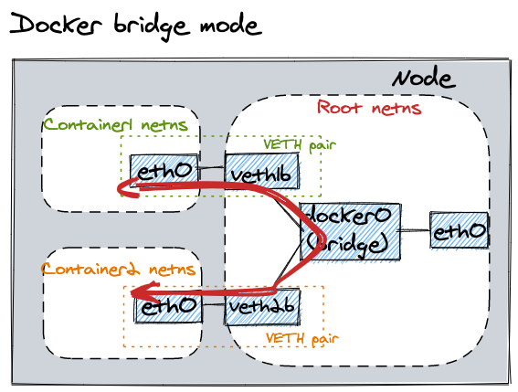

Docker Networking
让我们先大致了解下 Docker Networking
默认 bridge 模式

通常 Docker 只负责当前同一 host/node 下的容器通信，不去暴露 container ip 给其他 host/node
K8s 解决的问题之一就是不同 host/node 间的容器通信问题
IP in Kubernetes
下面大概介绍下 K8s 中的三大类 IP
- node IP
- 节点 IP，每个 K8s 节点都需要有一个 IP 地址
- 其实不属于 K8s 管理的范畴，通过其他方式分配，如：DHCP、手动配置、云厂商分配等
- pod IP
- 一个 pod 里的多个 containers 共享同一个 network namespace
- 每个 pod 会被分配 IP 地址，通过你当前使用的 CNI(Container Network Interface) 插件的 IPAM 功能分配
- 最基本的方式是通过给每个 node 分配一段 IP 地址段，node 再在这个地址段中分配 IP 给其上的 pod
- 有些插件会动态分配 IP 段
- kube-apiserver 通过启动参数
--cluster-cidr=172.16.0.0.0/16来决定所有 pod 的 IP 地址段
- service IP
- K8s service 是对一组 pod 的一个抽象
- 所有 non-headless service 都有一个 ClusterIP
- kube-apiserver 通过参数
--service-cluster-ip-range=172.15.100.0/23来决定 ClusterIPs 的 IP 池 - 通过 apiserver 组件管理分配，告诉 kubelet 进程 serives 与 IP 的映射关系，及 serivce 对应的 endpoints IP（如对应 pod 的 IP）
以上三者关系如图

CNI
Flannel
Flannel 是早期的网络插件之一，适合小的 K8s 集群。运行在 OSI 网络模型的第二层数据链路层（Ethernet）
IPAM
Flannel 分配静态 IP 网段到 K8s Node，K8s Node 从分配到的网段再分配 IP 给 pod
Encapsulation 封包
默认封包策略是 VXLAN（将 2 层以太网包封装到 UDP 包内）
Calico
Calico 运行在 OSI 网络模型的第三层网络层（IP），因此只有 IP 流量会被能被封装，and everything is routed
IPAM
Calico 使用 K8s API server 或者自己的 etcd cluster 集群来实现了动态的网段划分
Encapsulation 封包 Calico 默认的封包策略是 “IP-in-IP”(将 3 层的 IP 包添加额外的 IP 头形成一个新的 IP 包)，开销很小，但只能封装 IP 包
参考
Tutorial: Communication Is Key - Understanding Kubernetes Networking - Jeff Poole, Vivint Smart Home